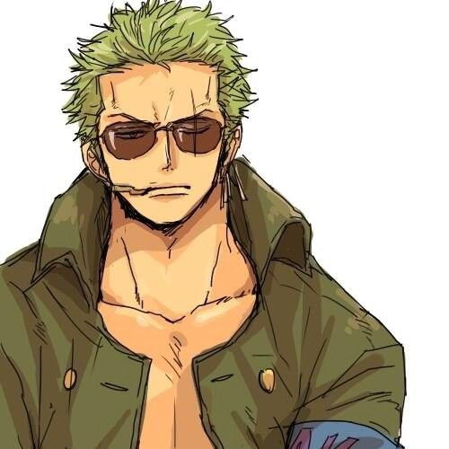
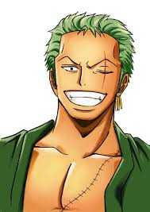
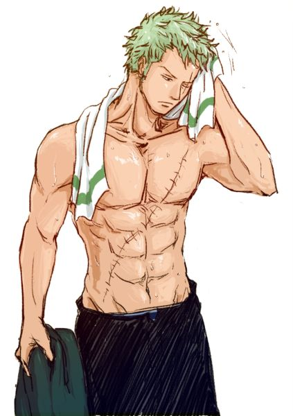
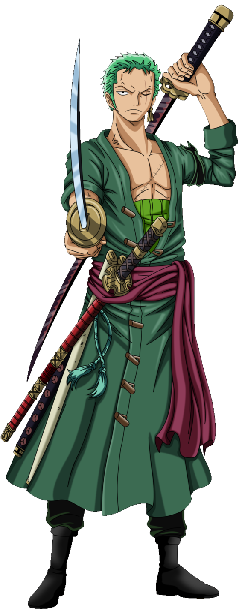
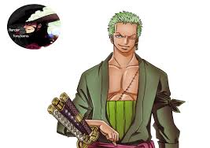
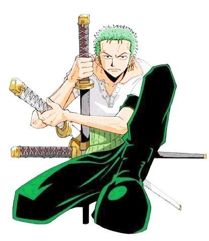
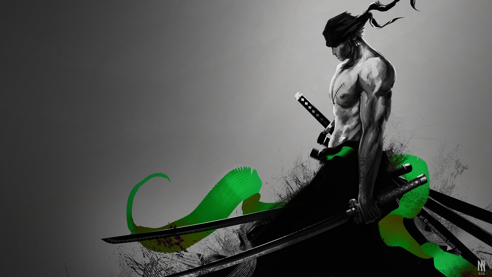

Roronoa Zoro,[1] also known as "Pirate Hunter" Zoro,[4] is a pirate[2] and a former bounty hunter[3]. He was the first member to join the Straw Hat Pirates, and, to date, is considered the largest threat and most dangerous member in the crew after Luffy. His fame as a master swordsman and his great strength, along with the actions of his captain, sometimes led others to believe he was the true captain of the crew.[11][12] He is one of the top three fighters in the crew alongside Luffy and Sanji, and his dream is to become the greatest swordsman in the world.[13] Zoro is regarded as one of twelve pirates who are referred to as the "Worst Generation" (formerly known as the "Eleven Supernovas"[14]).
|  |  |  |
|
|  |  |  |  |